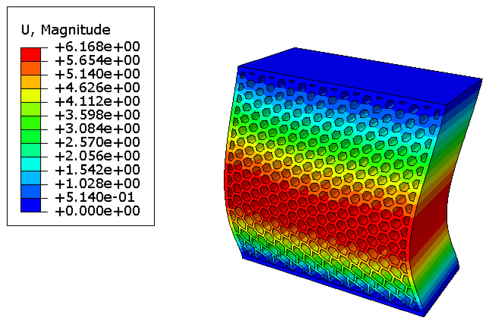

Highlighted Projects
Here are some things I'm currently working on. Check out the work page to read more! Or check out this slide deck for my portfolio!
Bruin Supermileage @ UCLA
Bruin Supermileage is a collegiate automotive competition team. Each year, we build and compete two cars: a gas vehicle and an electric vehicle. Our goal is to maximize fuel and energy efficiency.

Navajo Water Project @ UCLA
Navajo Water Project is a project under UCLA's chapter of Engineering Without Borders. We design and build a solar-powered sink system to bring running water to families in Arizona.
Rayne Research Group
The Additive Manufacturing and Metamaterials Laboratory headed by Dr. Zheng studies mechanics and materials science to develop additive manufacturing processes of micro-architected materials with unique properties.
